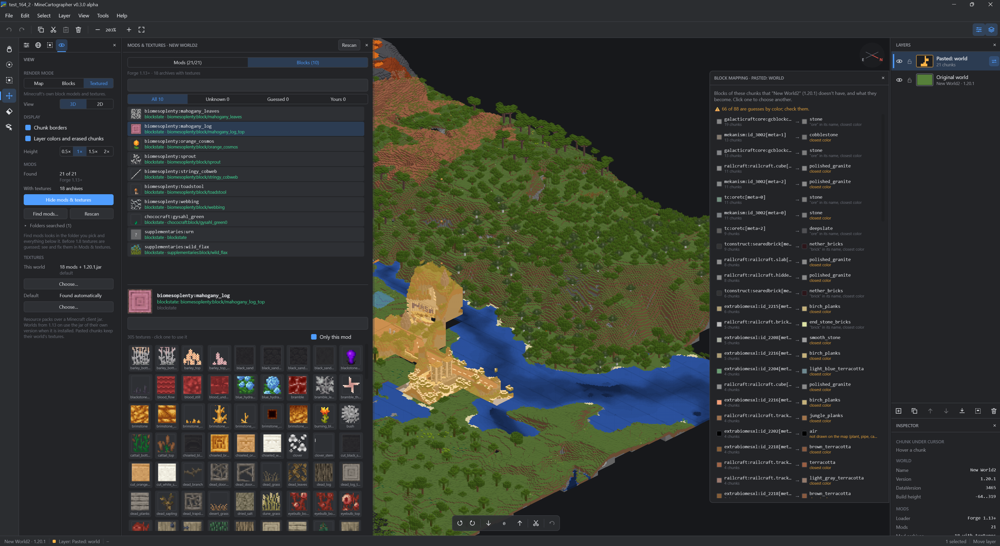
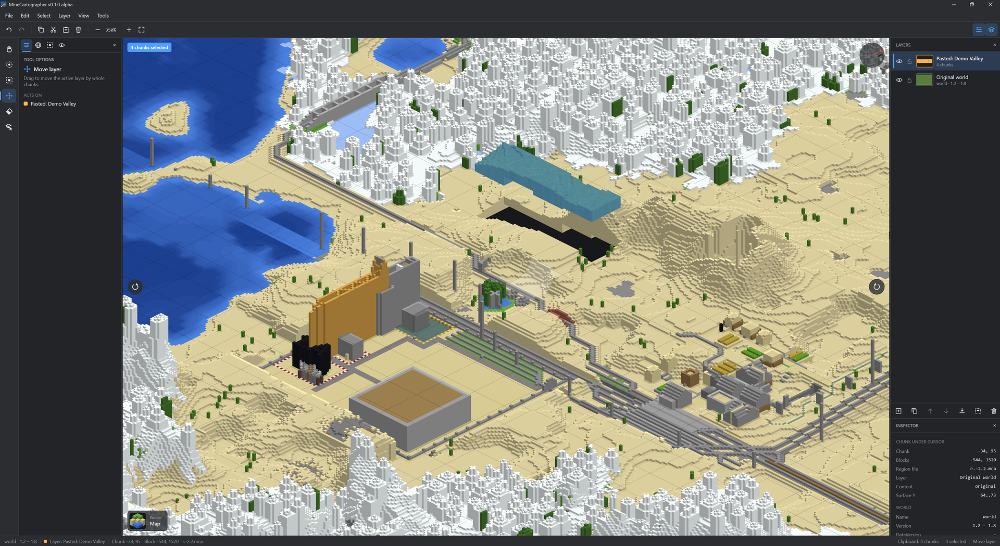
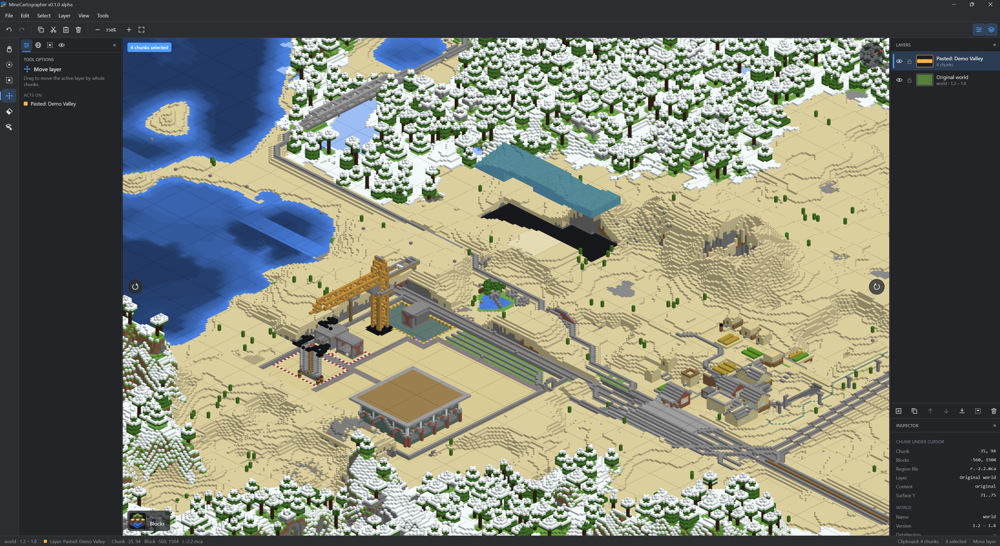
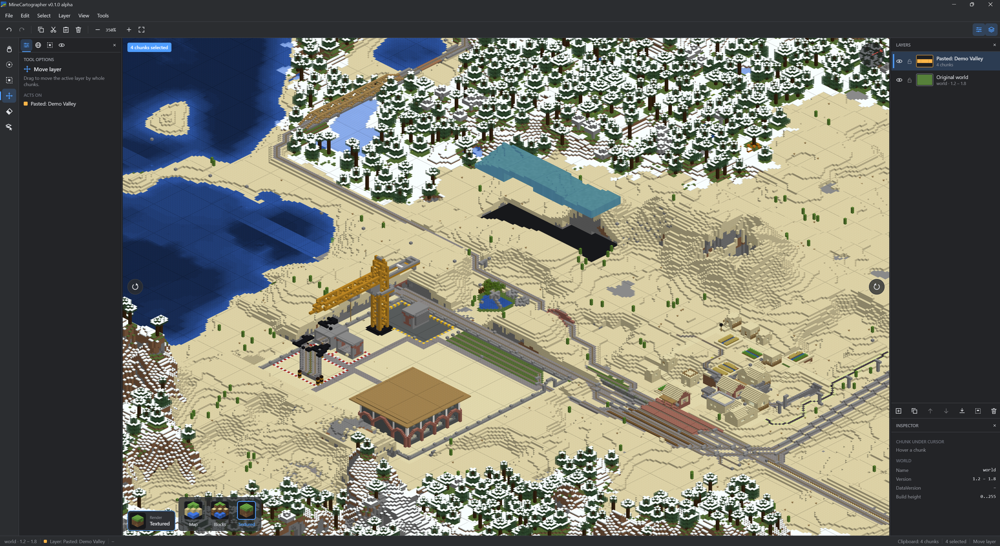

MineCartographer
Early alpha, v0.2. It works on the worlds it has been tested with, but expect bugs and rough edges, and things may change between versions. Back up your worlds and check an exported world in Minecraft before relying on it.
A desktop editor for combining Minecraft Java Edition worlds. Open several saves, possibly from different game versions, copy chunks from one into another as layers, and export the result as a new world. Your original saves are only read, never modified.

Features
- Reads Java Edition worlds from 1.2 to current versions, including the old numeric block IDs (1.2–1.12), the palette formats (1.13–1.17) and the 1.18+ chunk layout.
- Isometric 2.5D view of the terrain. Pan with the mouse or WASD, zoom with the wheel, rotate in 90° steps.
- Three render modes, from fastest to most detailed: Map, Blocks and Textured (see below).
- Layers, like an image editor. The original world is the bottom layer. Every paste becomes a new layer you can hide, lock, rename, reorder, merge down or flatten.
- Selection tools: brush, rectangle, select all/none/invert, layer to selection.
- Tools to move a layer, erase chunks and pick the layer under the cursor.
- Copy and paste between worlds, at the cursor or at the original coordinates.
- Non-destructive edits with full undo/redo. Erasing in the original world only hides chunks, and they can be restored.
- Projects save the whole workspace (open worlds, layers, selection, camera and settings) to a small XML file you can open again later.
- Export writes a new world folder. Untouched chunks are copied byte for byte.
Render modes
Switch modes with the button in the bottom-left corner of the view (hover it to see all three), from View in the menu, or with the 1, 2 and 3 keys.
Map draws only the top block of each column and extends it straight down to the ground, so a tree or a tower becomes a solid pillar. It’s the fastest mode, good for finding your way around a large world.

Blocks draws every block you can see, in flat colors close to those on Minecraft’s own maps, but without textures. Shapes come out right: trees have leaves and trunks, and you can see overhangs and the walls of buildings.

Textured uses Minecraft’s own block models and textures, read from a client jar in the usual launcher folders. Each world uses the jar of its own version when it’s installed (1.13 and newer), otherwise the newest one. In the View tab you can pick resource packs or a jar for each world, and a default for the rest. Chunks pasted from another world keep the textures of the world they come from. It’s the slowest mode.

How merging different versions works
Every chunk in a Minecraft save records the game version it was written with, and Minecraft upgrades old chunks one by one when it loads them. MineCartographer relies on this:
- The bottom layer (the original world) decides the version of the exported world.
- Pasted chunks keep their own version. When you open the exported world, Minecraft upgrades them, the same way it would upgrade an old world.
- Upgrading only works forwards, so chunks from a world newer than the base world can’t be exported. Use the newest world as the base and paste older ones into it.
Moved chunks get their coordinates, block entities, entities and scheduled ticks updated. Their lighting is recalculated by the game, and structure references (villages, strongholds and so on) are removed from them so they don’t point at the wrong place.
Limitations
- Only the overworld is merged. The Nether, the End, player data and maps are copied from the base world.
- Erased chunks are left out of the export, so Minecraft generates new terrain there.
- Blocks from mods show in a neutral grey in worlds before 1.13.
- Worlds saved with LZ4 chunk compression (
region-file-compression=lz4in newer servers) can’t be read. - Bedrock Edition is not supported.
Keep a backup of anything you care about, and test an exported world before you rely on it.
Getting started
You need JDK 25 to build and run from source. The Gradle wrapper is included.
./gradlew :app:runYou can also pass world folders, or a .mcproj project file, to open at startup:
./gradlew :app:run --args="'C:/Users/you/AppData/Roaming/.minecraft/saves/My World'"To build an installer for your platform (MSI on Windows, DMG on macOS, DEB on Linux):
./gradlew :app:packageDistributionForCurrentOSThe installer ends up in app/build/compose/binaries/.
Using it
- File → Open world folder… (Ctrl+O). Pick the world folder or its
level.dat. The Worlds tab also lists saves found in the usual launcher folders. - Select chunks with the brush (B) or rectangle (R) tool and copy them (Ctrl+C).
- Open the target world and paste (Ctrl+V). The chunks follow the cursor until you click, and become a new layer.
- Arrange the layers, then File → Export merged world… (Ctrl+Shift+S).
Projects
File → Save project (Ctrl+S) stores the current workspace in a .mcproj file: which worlds are open, every layer with its chunks, each world’s textures, the selection, the camera, the render mode and the dock layout. File → Open project… (Ctrl+Shift+O) brings all of it back, and File → Recent projects lists the last ones.
For each world the project also remembers the client jar its textures came from (the “core” textures), even when they were found automatically, so the world looks the same the next time. An export writes minecartographer-sources.xml into the new world folder. It lists every world that chunks came from, how many, and their textures, so you can later see which textures and resource packs the merged world needs. Minecraft ignores the file. The title bar shows * when there are unsaved changes, and the editor asks before closing them.
A project only refers to worlds by their folder and never contains them, so it stays small. The path is stored relative to the project file as well as in full, so you can move a project together with its saves. If a world can’t be found, the project opens without it and tells you which chunks were left out. Undo history and the clipboard are not saved.
The file is plain XML, so you can read it or keep it in version control:
<minecartographer-project format="1" app-version="0.2.0-alpha">
<worlds active="w0">
<world id="w0" name="My World" kind="folder" path="saves/My World" absolute-path="C:\...\My World"/>
<world id="w1" name="Old World" kind="folder" path="saves/Old World" absolute-path="C:\...\Old World">
<textures>
<file path="resourcepacks/Exotic.zip" absolute-path="C:\...\Exotic.zip"/>
<core-jar absolute-path="C:\...
ersions.16.5.16.5.jar"/>
</textures>
</world>
</worlds>
<stack world="w0" active="1" next-id="2">
<base visible="true" locked="false">
<erase x="4" z="-2"/>
</base>
<layer id="1" name="Pasted: Old World" visible="true" locked="false" color="#FFFFB547">
<chunk x="10" z="3" world="w1" from-x="0" from-z="0"/>
</layer>
</stack>
<stack world="w1" active="0" next-id="1">
<base visible="true" locked="false"/>
</stack>
<editor render-mode="Blocks" rotation="0" zoom="2.0" .../>
</minecartographer-project>Keyboard shortcuts
| Keys | Action |
|---|---|
| WASD / arrows, right or middle drag | Move the view |
Mouse wheel, + / - |
Zoom |
, / . |
Rotate the view |
| F | Fit the world on screen |
| 1, 2, 3 | Map, Blocks, Textured render mode |
| H, B, R, M, E, I | Move view, brush select, rectangle select, move layer, eraser, pick layer |
| Shift / Ctrl while selecting | Add to / subtract from the selection |
| Ctrl+A, Ctrl+Shift+A, Ctrl+I | Select all, none, invert |
| Ctrl+C / Ctrl+Shift+C | Copy from the active layer / copy everything visible |
| Ctrl+X, Del | Cut, clear from the active layer |
| Ctrl+V / Ctrl+Shift+V | Paste as a new layer / paste at the original coordinates |
| Ctrl+Shift+N, Ctrl+Shift+D | New layer, duplicate layer |
| PgUp / PgDn | Raise / lower the active layer |
| Ctrl+E, Ctrl+Shift+E | Merge down, flatten |
| Ctrl+Z, Ctrl+Y | Undo, redo |
| Ctrl+N, Ctrl+Shift+O | New project, open project |
| Ctrl+S, Ctrl+Alt+S | Save project, save project as |
| Ctrl+O, Ctrl+Shift+S | Open world, export |
Project layout
core/ World formats and editing logic, no UI
nbt/ NBT reader and writer
anvil/ Region files, level.dat, surface extraction, export
edit/ Layers, clipboard, undo history
project/ Project files (XML)
app/ Compose Desktop editor
viewport/ Isometric camera, chunk tile rendering and caching
editor/ Editor state, tools, shortcuts
ui/ Docks, panels, menus, dialogsDevelopment
./gradlew buildMost tests run on their own. The tests that read and export real worlds need saves on disk: set MINECARTOGRAPHER_WORLDS to a folder that contains Minecraft saves (it is searched a few levels deep, so a launcher folder with several instances works). Those tests pick one world per game version, only read them, and write exports to a temporary folder. Without the variable they are skipped.
MINECARTOGRAPHER_WORLDS="$HOME/.minecraft/saves" ./gradlew :core:testThe app icon is drawn in code (app/src/main/kotlin/minecartographer/ui/AppIcon.kt). After changing it, regenerate app/icons/ and the startup splash with:
./gradlew :app:generateIconsDisclaimer
Not an official Minecraft product. Not approved by or associated with Mojang or Microsoft.